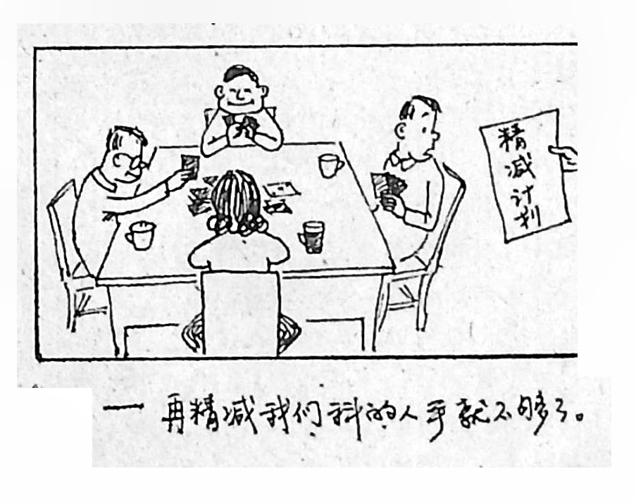

孙小鸣 《人事》1988年第8期（总第35期），第37页
无题
Untitled (“Cut any more and our section won't have enough hands”)
- Caption
- ——再精减我们科的人手就不够了。
—If you cut our section any further, we won't have enough people. - Text in the drawing
- 精减计划
Downsizing plan - Description
- Four men sit round an office table playing cards as a hand thrusts in a document labeled “downsizing plan.” Their objection: with any fewer staff, the section won't have enough hands — for the game.
- Note
- A four-player card game needs exactly four people.
- Artist
- Sun Xiaoming 孙小鸣
- Published in
- 《人事》1988年第8期（总第35期）, p. 37
- Themes
- Overstaffing and overlapping agencies · Reform and its implementation

Cite
Sun Xiaoming, “无题” [Untitled (“Cut any more and our section won't have enough hands”)], Renshi (Personnel) 《人事》, 1988, no. 8, p. 37.